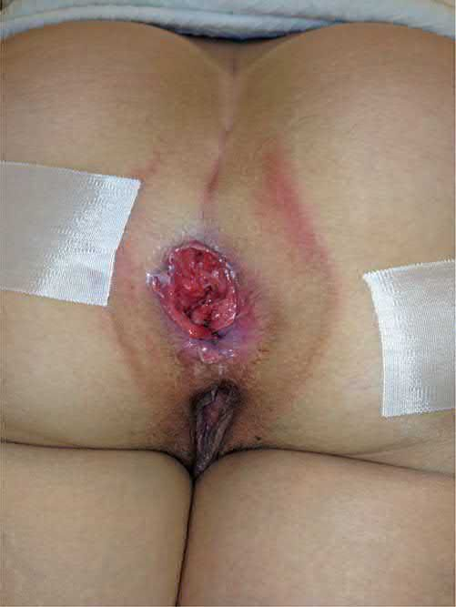

Anal Cancer
Summary
- Anal cancer is the tumour that is not treated by surgery first. Historically it was treated by abdominoperineal resection; since the late 1970s chemoradiotherapy has been the primary treatment, with radical surgery reserved for salvage [1].
- It is rare, less than 2% of all large bowel cancers, with a crude UK incidence of 0.65 per 100,000, but the incidence is rising, in direct association with HPV infection, anal intraepithelial neoplasia and immunosuppression [1].
- The single most consequential clinical error is misdiagnosing it as a benign anal condition, because it usually presents with pain and bleeding [1].
Definition
The dentate line divides the disease into two. The anal canal lies above it, the anal margin below [2]. The distinction matters because the two drain to different node fields and carry different prognoses: anal margin lesions have a better prognosis than anal canal lesions [2].
Anal intraepithelial neoplasia (AIN) is the precursor of anal squamous cell carcinoma, graded AIN I, II and III for low-, moderate- and high-grade dysplasia; the overall rate of conversion to carcinoma is low, and higher in the immunosuppressed [2].
Pathophysiology
The great majority of anal malignancies are squamous cell carcinomas [1]. Those arising below the dentate line are usually keratinising; those above are non-keratinising squamous, variously termed basaloid, cloacogenic or transitional [1]. There is now broad consensus that both behave similarly in presentation and response to treatment and should be treated as carcinomas whether keratinising or not [1].
Adenocarcinomas are the next most common and are thought to arise from anal glands [1]. Other tumours are melanoma, lymphoma, sarcoma and tumours of the perianal skin [1].
- Nodal drainage follows the same dividing line as the tumours.
- The superior and middle rectum drain to inferior mesenteric artery nodes; the lower rectum primarily to IMA nodes and also to internal iliac nodes; the anal canal to internal iliac nodes; and the anal margin to inguinal nodes [3].
- Bailey & Love states the practical consequence directly: lymphatic spread in anal cancer is to the inguinal lymph nodes [1].
Clinical features
Anal squamous cell carcinoma usually presents with pain and bleeding, and is therefore often initially misdiagnosed as a benign condition, which is exactly why a level of suspicion and an adequate examination are needed [1]. A mass, pruritus or discharge is less common [1].
Advanced tumours may cause faecal incontinence by invading the sphincters, and in women anterior extension may produce an anovaginal fistula [1].
The two sites look different on examination. Anal margin tumours look like malignant ulcers with raised indurated edges, sometimes with associated HPV lesions; anal canal tumours are palpable as irregular, indurated, tender ulceration, and sphincter involvement may be evident [1]. Involvement of perirectal and groin nodes may be palpable [1].
The ABSITE Review lists the canal lesion symptoms as pruritus, bleeding and a palpable mass, with possible palpable inguinal nodes [2].
Anal melanoma most commonly presents with rectal bleeding, and usually appears as a bluish-black soft mass that may mimic a thrombosed external pile, although it may be amelanotic [1][2]. Most anal melanomas are lightly pigmented or not pigmented at all [2]. Symptomatic disease is often already associated with significant metastatic disease [2].

Etiology
The association is with HPV (types 16 and 18) HIV, previous radiotherapy and immunosuppression [2]. Bailey & Love gives the same triad of HPV, HIV and immunosuppression [1]. The male-to-female ratio is approximately 1:2 [1].
Adenocarcinoma within the anal canal is usually an extension of a distal rectal cancer [1]. Rarely it arises from anal glandular epithelium, or develops within a longstanding and usually complex anal fistula, which is the reason to biopsy a non-healing fistula-in-ano [1].
Anal melanoma is worth knowing about out of proportion to its frequency. The anus is the third most common site for melanoma after skin and eyes; a third of cases have already spread to mesenteric lymph nodes at presentation, and haematogenous spread to liver and lung is early and accounts for most deaths [2].
Diagnosis
Examination under anaesthetic is the pivotal investigation. It allows detailed assessment of tumour size, involvement of regional nodes and adjacent structures, and the opportunity to obtain a biopsy for histology [1].
Staging is MRI of the pelvis plus CT of chest, abdomen and pelvis for locoregional and distant disease; PET-CT is increasingly used and may help where inguinal node assessment is equivocal [1].
Enlarged inguinal nodes must not be assumed to be malignant. They are common and may be secondary to inflammation rather than tumour, so histological or cytological confirmation is mandatory [1].
Thresholds and severity
- Surveillance intensity for AIN is set by immune status.
- AIN I and II follow an indolent course except in immunocompetent patients, for whom 12-monthly anoscopy is recommended [1].
- AIN III and multicentric intraepithelial neoplasia should be managed by clinicians with an interest in the disease, with a multidisciplinary approach involving gynaecological specialists [1].
- Immuno-incompetent patients, including those with HIV, are considered separately because of higher progression rates, poorer results and higher recurrence after surgery, and require extended follow-up with 6-monthly anoscopy [1].
- The ABSITE Review gives surveillance with biopsy every 4 to 6 months [2].
Size thresholds decide the operation for margin lesions. Wide local excision is used for squamous lesions under 5 cm, needing a 0.5 cm margin; chemoradiotherapy is the primary treatment for lesions over 5 cm, for those involving the sphincter, or where nodes are positive, the aim being sphincter preservation and avoidance of abdominoperineal resection [2].
For anal canal adenocarcinoma, wide local excision is possible only if the tumour is under 4 cm, involves less than half the circumference, is limited to the submucosa (T1, with a 2 to 3 mm margin), is well differentiated, and shows no vascular, lymphatic or nerve invasion; otherwise abdominoperineal resection is the usual treatment [2].
Treatment and Management
Anal intraepithelial neoplasia
- Topical imiquimod 5% or oral retinoids have some effect on the progression of dysplasia and can cause regression by at least two histological grades [1].
- Anti-HPV treatment is a newer option, and vaccination may reduce the incidence in the long term [1].
- The ABSITE Review lists topical imiquimod 5%, topical 5-fluorouracil 5%, ablative treatment such as laser or diathermy, photodynamic therapy, and surveillance with biopsy [2].
Squamous cell carcinoma
Chemoradiotherapy (the Nigro protocol) is the primary treatment, not surgery, and cures 80% [2]. The ABSITE Review describes the protocol as chemoradiation with 5-fluorouracil and mitomycin at 3000 cGy [2].
Abdominoperineal resection is a salvage operation. It is indicated for residual tumour, complications of treatment, incontinence or fistula after tumour resolution, and recurrent disease [1]. The ABSITE Review states the same indication more briefly, APR for treatment failure or recurrent cancer [2].
Positive inguinal nodes are treated by chemoradiotherapy, because radical groin dissection carries high morbidity [1]. The ABSITE Review notes that inguinal node dissection is needed if nodes are clinically positive for margin lesions [2].
Other histologies
Anal adenocarcinoma is treated as a low rectal cancer, abdominoperineal excision of the rectum with or without neoadjuvant chemoradiotherapy [1]. Postoperative chemoradiotherapy follows the same principles as for rectal cancer [2].
Anal melanoma is usually treated by abdominoperineal resection, with the margin dictated by the depth of the lesion as for melanoma elsewhere [2].
Basal cell carcinoma of the anal margin presents as a central ulcer with raised edges and rarely metastasises; wide local excision with 3 mm margins is usually sufficient, and APR is rarely needed unless the sphincter is involved [2].
The UK trials defined the modern regimen, and the choice between the two chemotherapy backbones was settled on practicality rather than efficacy. The UK Coordinating Committee on Cancer Research Anal Cancer Trial (ACT I) found that chemoradiation with radiotherapy at 50.5 Gy gave superior local control compared with radiotherapy alone [1]. ACT II found similar outcomes when chemoradiotherapy using cisplatin with 5-fluorouracil was compared with mitomycin and 5-fluorouracil; the longer infusion time required for cisplatin/5-FU has led to the preferred use of the mitomycin/5-FU combination [1].
Current UK trials are testing de-escalation. ACT III, ACT IV and ACT V are investigating more personalised protocols, including local excision only for small tumours, and excision combined with varying radiotherapy regimes for others [1].
The failure rate sets the need for a salvage pathway. Despite good results with chemoradiotherapy, 20 to 25% of patients will have an incomplete tumour response or local disease recurrence; after thorough assessment these patients may require radical abdominoperineal resection as salvage, and locally extensive disease may require pelvic exenteration, usually with perineal reconstruction using a myocutaneous flap [1].
The Association of Coloproctology of Great Britain and Ireland publishes the accompanying management guidance for anal cancer, alongside its position statement on anal fissure [1].
Procedural interventions
Radical surgical excision is by abdominoperineal resection [1]. Where disease is locally extensive, pelvic exenterative procedures are required, usually entailing perineal reconstruction with a myocutaneous flap [1].
Wide local excision has a defined place rather than a general one: squamous margin lesions under 5 cm with a 0.5 cm margin, basal cell carcinoma with 3 mm margins, and the narrowly specified T1 anal canal adenocarcinoma described above [2].
Complications
The complications that drive salvage surgery are named explicitly: residual tumour, complications of treatment itself, incontinence, and fistula after the tumour has resolved [1]. Anterior extension in women may produce an anovaginal fistula before treatment begins [1].
Radial groin dissection has a high morbidity, which is why positive inguinal nodes are managed with chemoradiotherapy instead [1].
Outcomes
Chemoradiotherapy cures 80% of squamous anal cancers, with 20 to 25% having an incomplete response or local recurrence [1][2].
Prognosis differs sharply by site and histology. Anal margin lesions do better than anal canal lesions; among squamous margin cancers, which are ulcerating and slow growing, men have the better prognosis [2]. The prognosis of anal melanoma is extremely poor irrespective of treatment [1]. Perianal Paget's disease is exceedingly rare [1].
References
- Bailey & Love's Short Practice of Surgery, 28th ed., Ch. 80 The anus and anal canal
- The ABSITE Review, 2022, Anal cancer
- The ABSITE Review, 2022, Nodal metastases
- Maingot's Abdominal Operations, 13th ed., Ch. 55